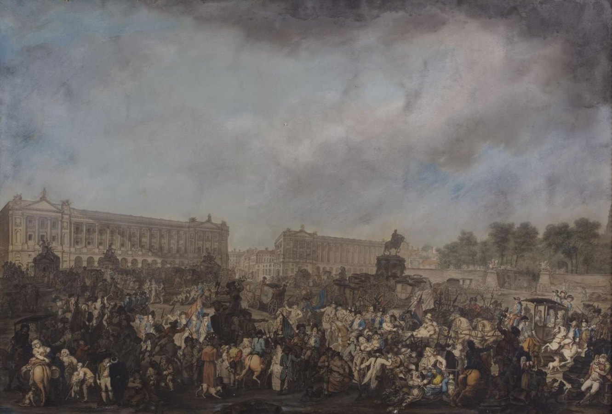
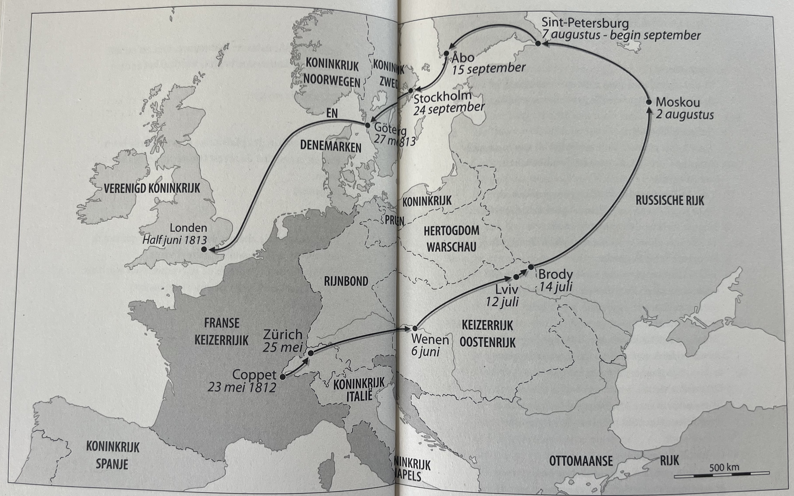

Verslag nummer 93
Toegevoegd op zaterdag 25 april 2026
1.083 woorden
Germaine de Staël
Dit boekje kocht ik naar aanleiding van een interview met de schrijfster bij OVT (een interview dat helaas op 8:40 voor drie minuten onderbroken door een verslag van "vier mannen die heel hard in een sleetje van een berg af gaan"). De Staël kende ik wel een beetje, onder andere uit dat fijne boek over Rebelse Genieën, maar het fijne wist ik er niet van. En hoewel Dijkgraaf deze leemte wel wat heeft opgelost, blijf ik nog wel met wat vragen zitten.
Biografische schets
Germaine de Staël was een puissant rijke schrijfster, politica en salonière. Ze was de dochter van Jacques Neckér, minister van financiën onder Lodewijk XVI – de laatste Franse koning van het Ancient Régime. Neckér was bijzonder populair onder de bevolking, met name door zijn pogingen de overheidsfinanciën op orde te brengen, de lasten eerlijker te verdelen en het geld werkelijk in te zetten voor de 'gewone Fransman'. Haar moeder was Suzanne Curchod, die eveneens literaire salons hield waar de grote denkers van haar tijd aan deelnamen.
De Staël nam al sinds haar vijfde deel aan de salons van haar moeder (die van haar dochter 'niet minder dan het achtste wereldwonder' wilde maken, p.32). Gezeten op een krukje moest ze toehoren en haar mond houden, tenzij één van de deelnemers haar iets vroeg. En die deelnemers waren niet de minsten: Diderot, Voltaire, Edward Gibbon of Jean-François Marmontel – haar hele jeugd werd ze omringd door de denkers en schrijvers die de Verlichting mogelijk hebben gemaakt
Op twintigjarige leeftijd trouwde ze met de zeventien jaar oudere Erik-Magnus, baron van Staël-Holstein. Er was weinig affectie tussen de echtgenoten: uiteindelijk zou ze vier kinderen krijgen waarvan er maar één (mogelijk) van haar wettelijke echtgenote was.
Door haar fortuin, haar opvoeding en de positie van haar vader ('de verafgode vader', p.40) zat ze midden in de Franse Revolutie. Eén van de haar eerste schrijfsel was bijvoorbeeld een pamflet om Marie Antoinette van de guillotine te redden (H.10, pp.90-98) – tevergeefs, natuurlijk. Later zou ze haar ervaringen in een (posthuum gepubliceerd) geschrift opstellen: Considérations sur les principaux événements de la Révolution Françoise.

==>Le retour de Louis xvi a Paris, p.72
Op subtiele wijze nam ze de salon van haar moeder over - de Groupe de Coppet (naar het familiekasteel aan de Zwitserse grens). Hier ontving ze op haar beurt de grote denkers van haar tijd: Goethe, de Schlegels, Talleyrand, Chateaubriant, lord Byron, noem het maar op. Deze groep denkers was initieel nog wel positief over Napoleon, maar naarmate ze hem langer kenden bleek zijn authoritaire inborst en werden ze steeds kritischer. Die leidde uiteindelijk tot de ballingschap van De Staël, die naar Duitsland vertrok.
Naarmate ze de grens naderde, werd ze steeds weemoediger. Lang liep ze heen en weer langs de Franse kant van de Rijnoever. Ze moest afscheid nemen van haar vaderland, 'het mooiste land van de wereld'. Ze dacht aan de vrienden die ze achter moest laten en zwoer bij zichzelf dat ze hen terug zou zien. (pp.161f.)
Voyager est un des plaisirs les plus tristes de la vie, is ook één van de opdrachten waar het boek mee opent.

Ballingschap en de ondergang van Napoleon
Tijdens haar ballingschap schrijft ze het boek De l'Allemangne – wat ook in Rebelse Genieën relatief uitgebreid aan bod komt. Het is dit boek dat de definitieve breuk met Napoleon veroorzaakt. De keizer was nogal chagrijnig dat hij in het boek niet voorkwam. Europa moest een Frankrijk worden zoals hij het in z'n hoofd had, en dat een gevierd en populair schrijfster als De Staël daar niet aan meewerkte kon hij niet velen.
Die ballingschap ging zich uiteindelijk tegen Napoleon keren. Door haar vele reizen kwam De Staël in contact met de hele Europese aristocratie die haar omarmde. Bijvoorbeeld tsaar Alexander, die wilde dat zij haar netwerk inzette om oppositie tegen Napoleon te mobiliseren – een netwerk dat ervoor zorgde dat de tegenstand uiteindelijk Europees werd. Uiteindelijk, aan het einde van haar lange reis naar Engeland, heeft ze op verzoek van Talleyrand honderden brieven geschreven om die mobilisatie te consolideren.
Er wordt wel gezegd dat Napoleon zijn ondergang heeft te danken aan Engeland, Rusland en Madamme de Staël.
Kritiekpunten
Het boek biedt veel aanknopingspunten met andere belangrijke gebeurtenissen uit die lange negentiende eeuw. Zo las ik dat één van haar eerste romans, Zulma, ging over een jonge vrouw die behoort tot een inheemse stam die aan de oever van de Orinoco woont – een plek waar Germaine nog nooit was geweest (p.117). Is het ondenkbaar dat dit één van de redenen is geweest waarom Alexander von Humboldt vier jaar later op zoek wilde gaan naar de onderstroom van diezelfde rivier...?
Desondanks is er ook wel het één en ander aan te merken op het werk. Zo vind ik Dijkgraaf wel érg fan-achtig schrijven. Op verschillende plaatsen gaat ze uitgebreid in op hoe goed De Staël wel niet was: hoe seksueel, hoe intellectueel en hoe belangrijk voor de loop van de negentiende eeuw. Zie bijvoorbeeld het (willekeurig gekozen) onderstaande citaat:
Germaine was een vrouwelijke intellectueel avant la lettre. Een vrouw die tegen de stroom in roeide en zich niet uit het veld liet slaan. Een vrouw die in haar denken verschillende posities trachtte te verenigen, die op de voet volgde wat er in de wereld gebeurde en daar een mening over had. Die macht had achter de schermen. Een vrouw, kortom, die zich niet zo gedroeg als de mannelijke wereld van toen van een vrouw eiste. (p.237)
Hieraan gekoppeld legt Dijkgraaf regelmatig links met de huidige tijd, wat begrijpelijk is wanneer je je werk een zekere urgentie wil geven, maar het haalt een beetje de flow uit het verhaal en wordt soms zelfs vervelend (bijvoorbeeld wanneer ze een heel hoofdstuk wijdt aan de relatie tussen De Staël en Cees Nooteboom).
Wat ik ook jammer vind is dat Dijkgraaf ervoor heeft gekozen om elk hoofdstuk te eindigen met een fragment uit één van de brieven van De Staël. Op zich is dat een grappig idee, maar de verhouding tussen deze fragmenten en dat wat in het hoofdstuk beschreven is, is niet altijd duidelijk. Ik moet bekennen dat ik die fragmenten na drie of vier hoofdstukken heb overgeslagen.
Conclusie
Een interessant en leerzaam boekje, kortom. Ik heb nu wel de neiging om nog meer te weten te komen over het begin van de negentiende eeuw (naar aanleiding van dit boek ben ik op zoek gegaan naar oorspronkelijke werken van Fichte van de Schlegels), maar als definitieve biografie van Germaine de Staël vind ik dit boek wel wat te kort schieten.